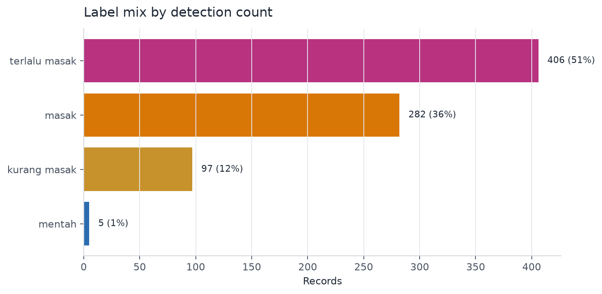
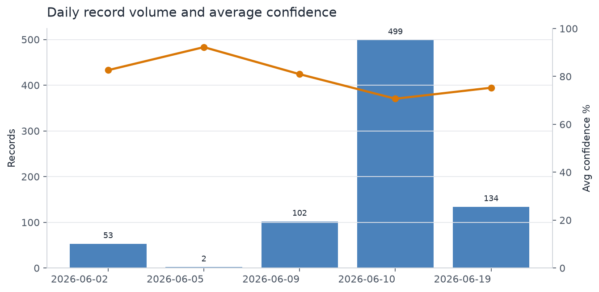
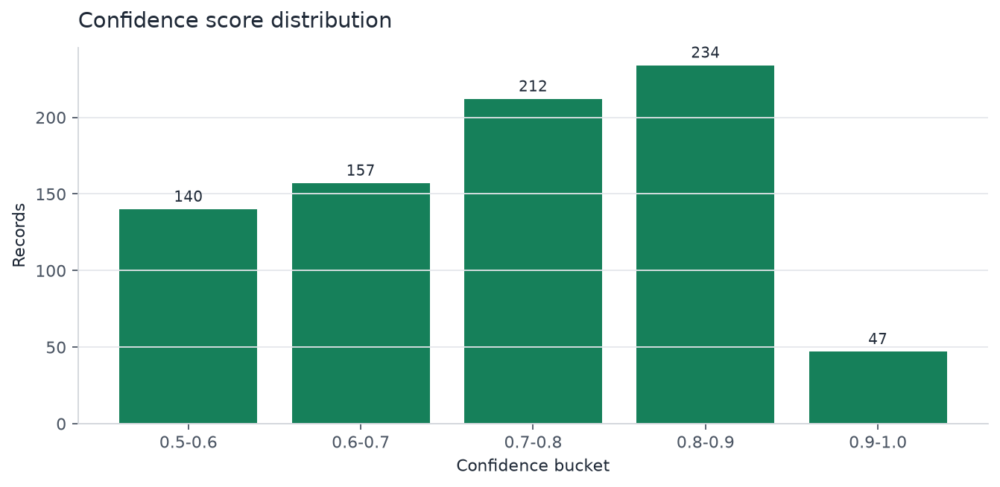

mGradingUSTP Dashboard Decision Report
Executive Summary
- Prioritize reliability and data completeness before adding dashboard features. The dashboard has enough data to validate the VPS pipeline shape: 790 detections, 20 sessions, and 2 Android devices from Jun 2, 2026 to Jun 19, 2026. The operational risk is not volume; it is preserving complete uploads and making sync health observable.
- Label mix is concentrated. terlalu masak is 406 records (51.4%) and masak is 282 records (35.7%). Together they account for 87.1% of records, so dashboard diagnostics should make label mix and label-specific confidence easy to monitor.
- Confidence quality is usable but uneven. Average confidence is 73.7%, with 297 records below 70% and 281 records at 80% or higher. This supports a confidence-quality view before deeper model tuning decisions.
- Image coverage needs hardening. Crop coverage is 93.7% and frame coverage is 85.4%, but annotated image coverage is only 1.1%. If annotated images are expected for audit, the upload or generation path should be fixed before relying on gallery review.
Label Mix Should Be A First-Class Monitoring View
The dashboard is mostly explaining overripe and ripe detections. The top two labels dominate record volume, while mentah appears only 5 times. That concentration is useful operationally because the default dashboard should quickly show whether field sessions are skewing toward expected maturity classes or whether the model/app is over-producing one label.

detections, all available records.| Label | Records | Share | Avg confidence |
|---|---|---|---|
| terlalu masak | 406 | 51.4% | 71.5% |
| masak | 282 | 35.7% | 75.3% |
| kurang masak | 97 | 12.3% | 78.4% |
| mentah | 5 | 0.6% | 66.8% |
Volume Is Sufficient, But Session Peaks Need Operational Context
June 10 carries most of the observed volume. It has 499 of 790 records across 8 sessions, while the next largest date has 134 records. That makes the dashboard useful for stress-testing gallery, table, and API response behavior, but it also means any label or confidence conclusion should be treated as a field-test readout rather than a stable production baseline.

Largest sessions
| Session | Records | Avg confidence |
|---|---|---|
| LIVE-1781080912053 | 103 | 66.0% |
| LIVE-1781080720748 | 97 | 71.6% |
| LIVE-1781080794157 | 95 | 72.5% |
| LIVE-1781853269071 | 66 | 74.1% |
| LIVE-1780992550574 | 59 | 80.9% |
| LIVE-1781876107916 | 56 | 77.2% |
| NO_SESSION | 53 | 82.6% |
| LIVE-1781081455238 | 51 | 69.3% |
Confidence Quality Needs Monitoring, Not Immediate Redesign
The model output is strong enough for dashboard use but needs guardrails. Most records are at 70% or higher, yet 297 records sit below 70%. The next dashboard iteration should add confidence filters and low-confidence review counts to make quality issues visible by label, session, and upload date.

Recommended Next Steps
- Finish VPS reliability validation first. Deploy the new FastAPI and Streamlit services, then verify HTTPS, systemd restart, Android sync, duplicate update behavior, and image serving before adding new dashboard features.
- Add an upload completeness KPI. Track frame, crop, and annotated coverage separately because missing images reduce audit value even when metadata sync succeeds.
- Add confidence QA cuts. Show low-confidence records by label and session so field teams can separate model-quality issues from data-capture or lighting/session issues.
- Keep label mix prominent. Use label distribution and label-specific confidence as default views because the observed data is highly concentrated in two maturity classes.
Further Questions
- Should annotated images be required for every synced record, or are crop/frame images enough for the first VPS release?
- Which label mix is expected in normal field operations? Without that benchmark, the report can identify concentration but cannot judge whether it is good or bad.
- What confidence threshold should trigger review, re-capture, or model retraining follow-up?
Caveats and Assumptions
This report uses the local SQLite dashboard database at /mnt/pioneer/Project_mGradingUSTP_Dashboard/server/mgrading_dashboard.db, table detections. It treats the available records as field-test dashboard data, not a production baseline. Data warehouse and team communication sources were deferred during onboarding, so this report does not validate the numbers against external operational records or field notes. Static charts were rendered with Matplotlib because Seaborn is not installed in this local environment.